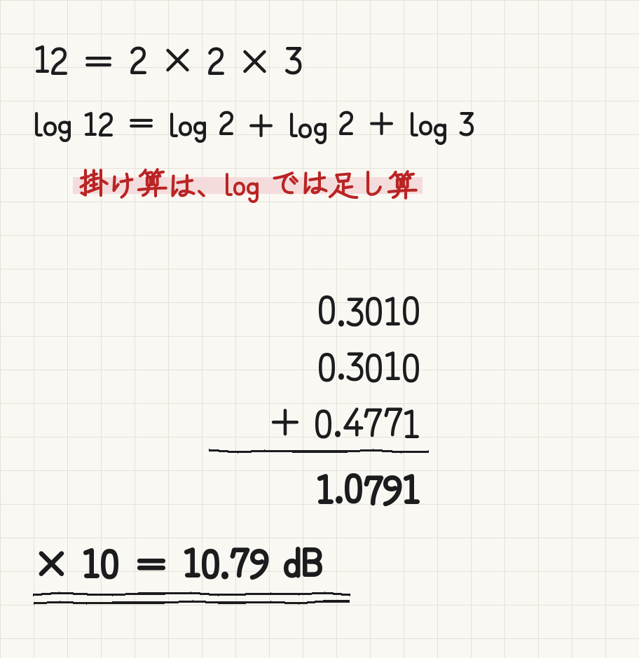

対数：log 2 と log 3 だけで、ほかの数の log を出す
一陸技の問題には「log₁₀ 2 ＝ 0.3010、log₁₀ 3 ＝ 0.4771 とする」と添えてあることがあります。与えられるのはこの2つだけで、6倍や50倍の log は、自分で作ります。
先に答え数を 2、3、10 の掛け算と割り算に分けて、log は足し引きします。log 6 ＝ log 2 ＋ log 3 ＝ 0.778、log 5 ＝ 1 − log 2 ＝ 0.699 です。
どこで止まるか
止まる原因前に習った決まりを忘れている掛け算の log は足し算になる、という対数の決まりを、長く使っていないことです。
「電力が6倍。log 6 は与えられていないので、出せない」と手が止まる。または、log 6 ＝ log 2 × log 3 ＝ 0.14 としてしまう。
掛け算は足し算に、割り算は引き算に
対数（log）は「10 を何乗するとその数になるか」を表します。10 の何乗どうしの掛け算は、指数の足し算です。だから、数を掛け算の形に分ければ、log は足し算で出せます。
log (A × B) ＝ log A ＋ log B
log (A ÷ B) ＝ log A − log B
log 10 ＝ 1、log 100 ＝ 2
log (A ÷ B) ＝ log A − log B
log 10 ＝ 1、log 100 ＝ 2
2、3、10 の掛け算と割り算で書ける数は、すべて出せます。
| 数 | 分け方 | log |
|---|---|---|
| 4 | 2 × 2 | 0.3010 × 2 ＝ 0.602 |
| 5 | 10 ÷ 2 | 1 − 0.3010 ＝ 0.699 |
| 6 | 2 × 3 | 0.3010 ＋ 0.4771 ＝ 0.778 |
| 8 | 2 × 2 × 2 | 0.3010 × 3 ＝ 0.903 |
| 9 | 3 × 3 | 0.4771 × 2 ＝ 0.954 |
| 50 | 100 ÷ 2 | 2 − 0.3010 ＝ 1.699 |
5 は「10 ÷ 2」と見るのが要点です。7 は、2 と 3 と 10 では作れません。7 の log が要る問題では、その値が別に与えられるはずです。
数値で確かめる
電力が12倍になる増幅器の利得を、dB で求めます。
12 ＝ 2 × 2 × 3
log 12 ＝ 0.3010 ＋ 0.3010 ＋ 0.4771 ＝ 1.079
10 × 1.079 ＝ 10.79 dB（およそ 10.8 dB）
log 12 ＝ 0.3010 ＋ 0.3010 ＋ 0.4771 ＝ 1.079
10 × 1.079 ＝ 10.79 dB（およそ 10.8 dB）
電圧が3倍のときは、20 を掛けます。20 × 0.4771 ＝ 9.54 dB です。

確かめの1問
log₁₀ 2 ＝ 0.3010、log₁₀ 3 ＝ 0.4771 として、電力が30倍のときの利得は何 dB ですか。
log₁₀ 2 ＝ 0.3010、log₁₀ 3 ＝ 0.4771 として、電力が30倍のときの利得は何 dB ですか。
答え
30 ＝ 3 × 10。log 30 ＝ 0.4771 ＋ 1 ＝ 1.4771。10 を掛けて、14.77 dB（およそ 14.8 dB）。紙の上で繰り返して固めたい方へ：書き込み式の問題集の案内 ／ 数を入れて確かめる：デシベルの計算の道具
最終更新：2026年11月16日